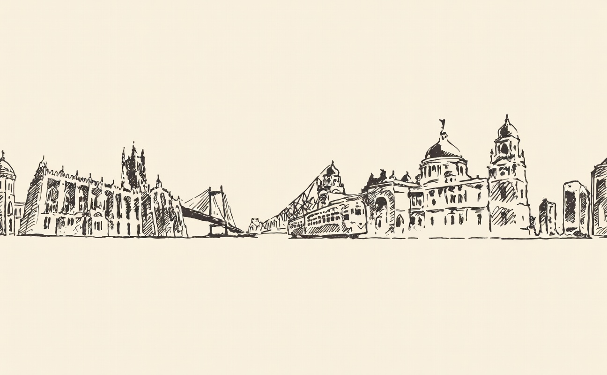

Welcome in · leave your shoes at the door
Subham Kanoi this is not a portfolio. it’s a room.
A Kolkata boy who feeds people for a living. Pull up a chair. I keep my pride, my roots and the things that move me on these walls.

The man in the photo
I’m Subham.
Born in Kolkata in the spring of 1995 — a city of trams, monsoon and long lunches. I grew up in a house where guests were never strangers and an empty plate was a small failure. That stayed with me.
I didn’t set out to be remarkable. I set out to be useful — to take care of people in the most ordinary, daily way there is: by feeding them well, on time, with a little dignity. Everything I’ve built grows out of that one stubborn idea.
“Hospitality is just love, made practical.”
What I do with my hands
I run the kitchens
that feed people far from home.
Through UR Hospitality — Urban Rasoi — I build and run corporate cafeterias: the warm, unglamorous engine rooms where a workday gets its breakfast, its lunch, its 4 o’clock chai. It is honest work, and I am quietly proud of it.
A hot meal, every weekday
Menus planned, food safe, served on time — for people who are somewhere they’d rather be home from. That reliability is the whole job.
A kitchen run with care
Behind every counter is a team. I’d rather be known as someone who looked after his people than someone who simply scaled.
The unglamorous craft
Logistics, hygiene, costing, the same dal tasting right on a Tuesday as it did on Monday. The romance is in getting the boring things right.
The long way here
My journey, in chapters.
No straight lines — just a slow climb, and a lot of people who believed in me before there was much to believe in. A few markers on the road:
-
1995
Born to Kiran & Om Prakash Kanoi
The 1st of March, in Kolkata — to my mother Kiran, from the hills of Siliguri, and my father Om Prakash, from the land of Rajasthan. The desert and the foothills, meeting in the City of Joy. Everything I am starts with them.
-
2008
I flunked class 9
The “good student” failed — my very first taste of falling short. And, strangely, the most rewarding failure of my life. It taught me young that the floor is survivable, and that’s a thing worth knowing early.
-
2012
St. Xavier’s College, Kolkata
Got in — and promptly into one of those gloriously pseudo-cool commerce societies. I spent these years quietly figuring out who I wanted to become.
-
2014
Make A Difference
Began volunteering as an ed-support volunteer — showing up for children who needed someone to. The first time my hours felt like they belonged to something bigger than me.
-
2015
Leading the Kolkata chapter
Trusted to lead MAD’s entire Kolkata chapter. Being handed responsibility for other people’s effort — and their belief — rearranged how I saw myself.
-
2015
I met Varun
Met my co-founder, Varun Bhaia, at Startup Weekend (by Google) at IIM Calcutta. Some handshakes you can trace an entire life back to. This was one.
-
2016
Urban Rasoi begins
Started Urban Rasoi as a home-chef aggregator — which slowly, stubbornly grew into a B2B corporate catering company. The kitchens were born.
-
2020
First summit — Kedarkantha
My first trek to a summit. The mountains taught me what the city couldn’t: that you get to the top in small, stubborn steps, and not one other way.
-
2020
The second great setback
Then COVID. Ninety percent of our revenue, gone almost overnight — and the two years after took the savings too. I found out exactly what I was made of by losing nearly all of it. Scorpio learns by burning down and growing back.
-
2024
Rebuilt, from the ground up
Brought Urban Rasoi back — this time as a house-party catering company — and clawed our way to half of what we once were. Starting over, on purpose, is its own quiet kind of courage.
-
2026
All the way back — and expanding again
Back to pre-COVID revenues, and stepping into the B2B vertical once more. Not the same company. Not the same man. Better, I think — tempered.
-
Now
This room
Still feeding people, still a boy from Kolkata. And keeping this quiet corner of the internet to remember every fall it took to get here.
Where the roots are
Kolkata made me.
The Howrah Bridge at dusk. A tram’s slow bell. The Victoria Memorial going gold in the evening. This city taught me that warmth and grit are the same thing — that you can be soft with people and still get the work done. Whatever I become, I’ll have been a boy from here first.

On the shelf
Three things I keep close.
Pride
Not the loud kind. The quiet satisfaction of a thing built well and a promise kept — the lights on, the food out, the people fed.
Humility
I remember every version of myself who didn’t have this yet. Staying grateful is not a virtue I perform; it’s just memory, kept honest.
Faith
I read the sky a little — the old Indian way of marking time and temperament. It keeps me patient, and it keeps me small under something larger.
Before you go
Don’t leave without saying hello.
If something here moved you, or you just want to talk food, work, or Kolkata — the door stays open.